光栅图形学
扫描转换
直线的扫描转换算法
这一算法主要是使用离散的像素点逼近真实的直线，从而让视觉效果更加真实。
直线方程为y=kx+b，已知P0(x0,y0)，由于像素点坐标为整数，需要通过四舍五入进行取整操作
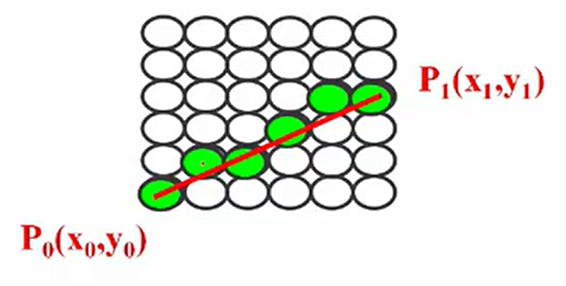
数值微分法(DDA)
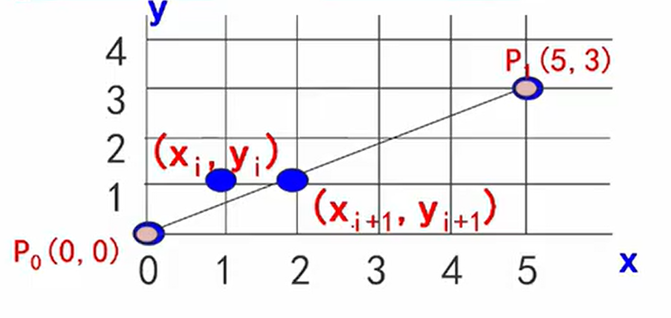
基本思想：增量思想，将乘法转换为加法，提高了算法的效率
优点：提出了增量的思想，奠定了基础
缺点：在k绝对值大于1的情况下，光栅点过于稀少，无法真实呈现直线
中点画线法
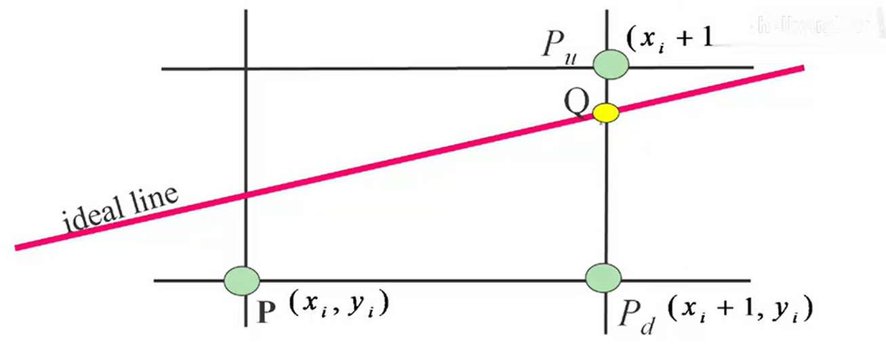
基本思想：每次在最大位移方向上走一步，另一方向根据中点误差项判断
优点：通过中点误差项解决了DDA光栅点稀少的问题，让直线的绘制更加准确
缺点：严重依赖于直线方程，扩展性低
Bresenham算法
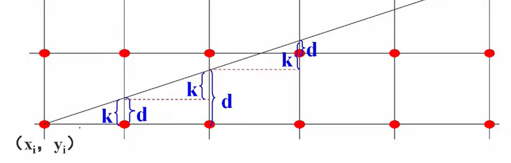
基本思想：通过各行、各列像素中心构造虚拟网格线，按照直线起点到终点的顺序，计算直线与各垂直网格线的交点，然后根据误差项的符号确定该列像素中距离最近的像素。
算法步骤：
- 输入两端点P0(x0,y0)和P1(x1,y1)
- 计算初始值dx,dy,e=-dx,x=x0,y=y0
- 绘制点(x,y)
- e根据上面的递推公式更新，并判断符号确定下一点。若e>0，则下一点为(x+1,y+1)；否则下一点为(x+1,y)（注意这里在x方向上的增量大于在y方向上的增量，因此每次给x加1；当在y方向上的增量更大时，每次应当给y加1）
- 重复步骤3和4直至直线完成绘制
多边形的扫描转换
多边形可以用顶点表示或者用点阵表示，顶点表示拓扑性强，但是不能明确像素点是否在多边形边界内；点阵表示虽然不能明确表示多边形形状，但是可以明确像素点是否在多边形内部。因此多边形的扫描转换就是把多边形将顶点表示转换为点阵表示。
X-扫描线算法
基本思想：按照扫描线的顺序，计算出扫描线与多边形的相交区间，再按照要求显示这些区间的像素即可完成多边形绘制。
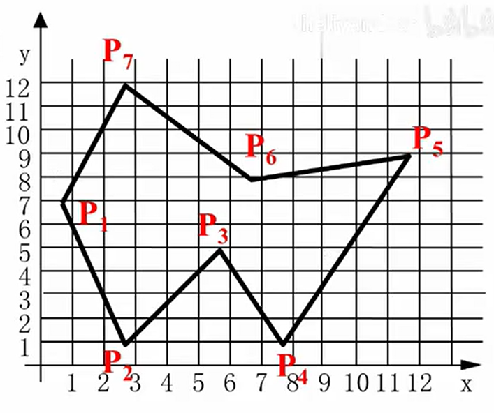
如图所示，扫描线y=3与多边形的相交点为(2,3)，(4,3)，(7,3)，(9,3)，因此(2,3)和(4,3)之间的像素点应当填充颜色，(7,3)和(9,3)之间的像素点应当填充颜色，这就是一次扫描。
X-扫描线算法步骤：
- 确定多边形占有的最大扫描线数，得到ymin和ymax
- 从ymin到ymax用扫描线填充，填充时先求交点，然后对交点按照x递增方向排序，接着对交点进行配对，最后填色即可。
注意：当进行交点配对时，存在共享交点的问题，只需检查共享交点两条边另外两个端点的y值即可。当这两个y值只有一个大于交点的y值，那么这两条边就在扫描线的两侧，则这个交点算一个交点（P1）；当这两个y值都小于或都大于交点的y值，那么这两条边就在扫描线的同一侧，则这个交点可以算成0个或者2个（P3）。
缺点：算法效率较低，求交运算计算量巨大，当多边形数量增加时会消耗大量算力。
有效边表法
改进思路：
- 求交运算的有效性：仅对有效边进行求交运算，不考虑不相交的边
- 扫描线具有连贯性：当前扫描线和各边的交点顺序与下一条扫描线和各边的交点顺序很可能相同或相似
- 多边形的连贯性：某条边与一条扫描线相交时，很有可能与下一条扫描线也相交
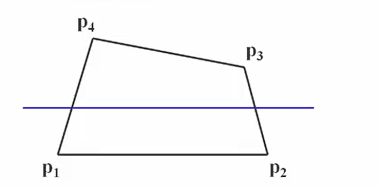
为减少求交运算，该算法引入了新的数据结构——活性边表(AET)
- 活性边表：与当前扫描线相交的边称为活性边，并将它们按照与扫描线交点x坐标递增的顺序放入链表，在上图中则按照lp1p4、lp2p3的顺序放入链表。
- 结点内容：链表的一个结点中包含x，δx(由于yi+1-yi=1，由推导可知δx=1/k)，ymax以及指向下一结点的指针，其中x是当前扫描线与边交点的x坐标，δx是从当前扫描线到下一条扫描线x的增量，ymax是该边相交的最高扫描线的y坐标
为方便更新活性边表，需要存放多边形各边的信息，因此建立了——新边表(NET)，这一结构中同样包含了ymax，xmin，δx以及指向下一结点的指针。其中，xmin是该边较低点的x坐标
算法步骤：
- 查看是否有边需要被除掉，因为该算法只处理活性边
- 对活性边更新x值，也就是xi+1=xi+δx
- 从NET中添加新的边
伪代码如下：
1 | void polyfill(多边形 polygon,int color) |
区域填充
区域填充算法要求区域是联通的，主要有4向联通和8向联通两种方式，如下所示
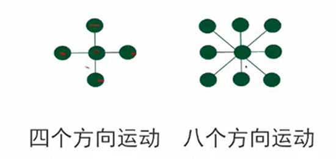
区域填充递归算法
首先种子像素入栈，在栈非空的时候重复如下操作
- 栈顶像素出栈
- 将出栈像素置成要填充的颜色
- 按左上右下顺序检查与栈像素相邻的四个像素，若其中某个像素未在边界且未置成要填充的颜色，将其入栈
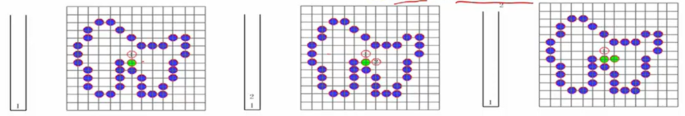
不足之处：
- 有些像素会入栈多次，降低效率
- 栈结构占用空间大
- 递归执行，费时费内存
反走样
走样是由于光栅显示中像素的离散性导致的，可能会导致如下的问题：
- 线条呈现“锯齿状”
- 微小的图形处于两边像素的中间，由于四舍五入而消失
- 动画中的图形由于上述问题可能会消失，最终产生时隐时现的效果
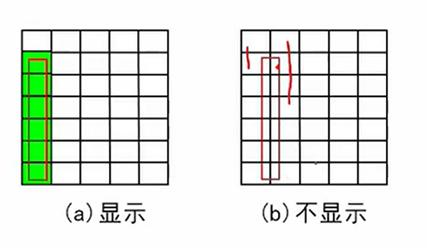
解决方法：提高显示器分辨率的代价非常大，因此可以进行某些程度上的“模糊”或者平滑处理，可以让视觉上更加真实
非加权区域采样
根据物体的覆盖率计算像素的颜色亮度，覆盖率是指某个像素区域被物体覆盖的比例
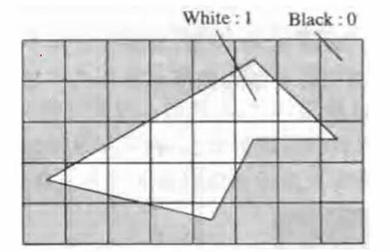
假设每一个帧缓冲区(图中的小方格)的像素有4个比特位，也就是有16(24)种，0表示黑色，15表示白色。根据覆盖率调整亮度值，覆盖一半亮度值就变成8，以此类推就得到了如下的亮度存储值
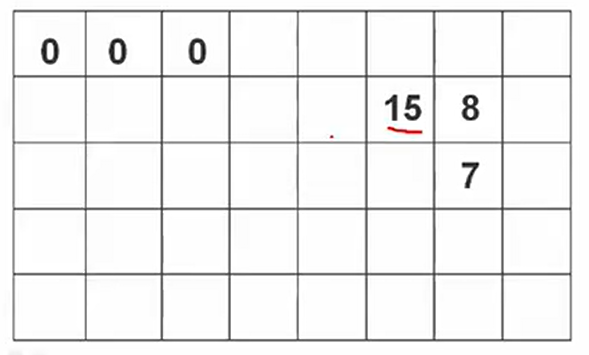
缺点：
- 这一方法忽略了覆盖区域在像素内的具体位置分布，只是把硬边锯齿变成了软边锯齿，这仍然会导致锯齿效应
- 直线上沿理想直线方向的两个相邻像素有时候会有较大的灰度差
加权区域采样
计算方法：直线段对一个像素亮度的贡献值正比于相交区域与像素中心的距离，设置权函数（高斯函数）反映贡献值。利用权函数积分求相交区域面积，乘以像素可设置的最大亮度值，就得到了实际显示的亮度值
也可以采用离散计算的方法，将一个像素分成3x3的子像素，加权方案如下
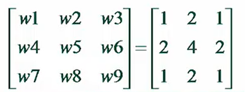
先求出所有中心落在直线段内的子像素，然后对所有子像素进行计算，就可以得到原像素的贡献值
裁剪
使用计算机处理图像信息时，存储的图形可能会超出显示的范围，因此需要确定落在显示区域内和显示区域外的部分，这就是裁剪算法。
直线段的裁剪
Cohen-Sutherland算法
对于直线的裁剪主要分三种情况处理：
若完全在窗口内，则保留
若两端点都在窗口外，也就是满足如下条件之一的：
2.1 x1
2.2 x1>xleft && x2>xleft
2.3 y1
2.4 y1>yleft && y2> yleft
那么就直接裁剪
不满足上述两种情况，则进行编码处理
编码规则：对每条线段的端点进行D3D2D1D0编码，若x
该算法先对两个端点进行编码，然后再进行与或运算
- code1 | code2=0，那么这一线段一定在窗口内，应当保留
- code1 & code2≠0，那么这一线段一定在窗口外，应当裁剪
- 不满足上述两种情况，则求出与窗口的交点之后再运算，直到满足上述的两种条件
存在的问题：如下的情况将进行多次求交运算，并且最终全部舍弃，耗费大量时间
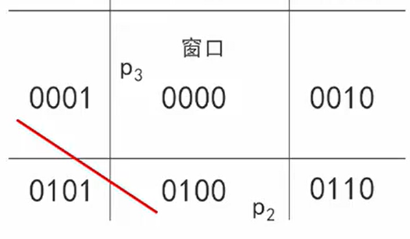
中点分割法
这一算法的编码方案和情况分类与上一算法相同，不同的是引入了二分逼近的思想
核心思想：通过二分逼近确定直线段和窗口的交点
如下图，先计算出p1p2的中点p3，然后舍弃p2p3，再计算出p1p3的中点p4，以此类推直到满足完全在窗口内
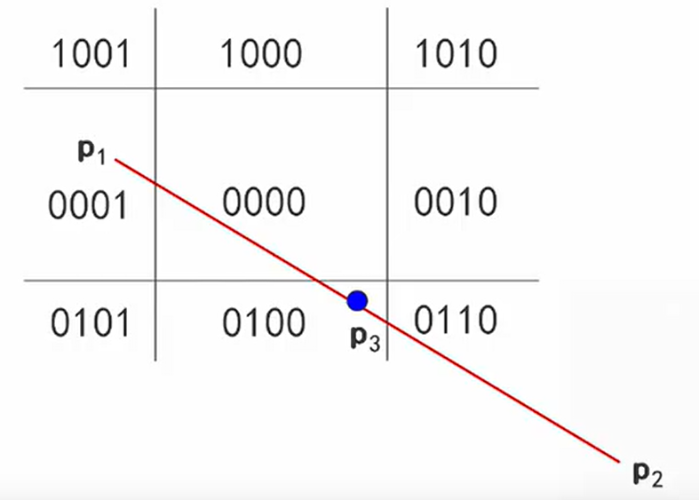
缺点：使用递归的方法进行裁剪，处理多条线段时会耗费大量时间
Liang-Barsky裁剪算法
核心思想：使用参数方程表示一条线段，并且把直线段看成有方向的线段
入边：直线由窗口外向窗口内移动，经过左边界和下边界
出边：直线由窗口内向窗口外移动，经过右边界和上边界
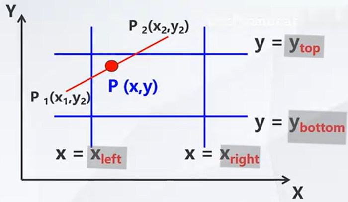
优点：这一算法避免了求交运算，大大提升了运算效率
上述的三种算法都只能应用于矩形窗口的裁剪，不能应用于其他窗口的裁剪！
多边形裁剪
Sutherlan-Hodgeman算法
基本思想：将多边形看做整体，每次用窗口的一条边对多边形和中间结果多边形进行裁剪
过程如下：
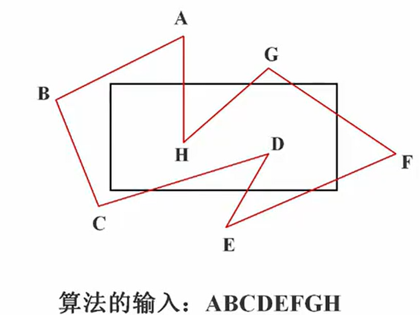
得到了如下的中间结果多边形并作为下一个输入
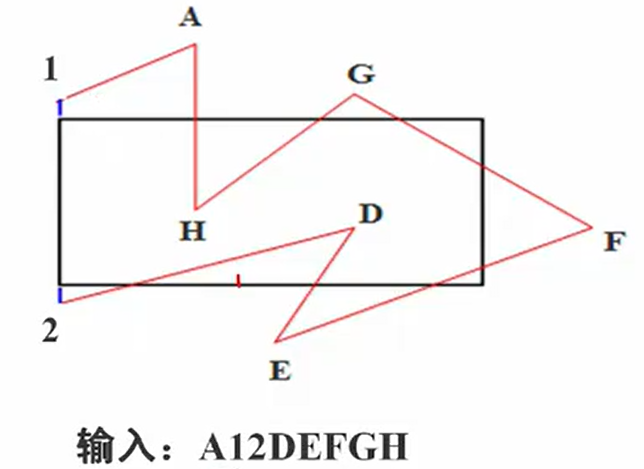
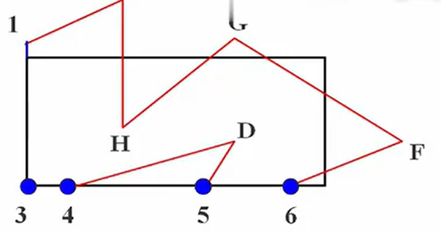
在输出顶点表中是否加入该顶点，应当遵循如下的规则，以下图为例
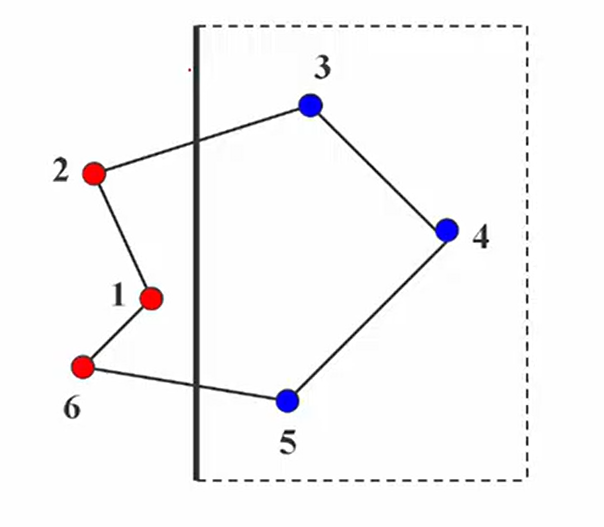
- 从6→5的边，应当输出交点和5
- 从5→4的边，应当输出4，因为5已经输出过了
- 从3→2的边，应当输出交点
- 从2→1的边，不输出任何顶点
不足之处：适用于凸多边形，凹多边形会保留多余的边
文字裁剪
- 串精度裁剪：当字符串中所有字符都在窗口中时保留，否则全部舍弃
- 字符精度裁剪：任何与窗口有重叠或者落在窗口外的字符都被裁剪掉
- 笔画/像素精度裁剪：将笔画分解为直线段进行裁剪，精度很高
消隐
当我们观察空间中的不透明物体时，只能看到朝向我们的表面，其余表面无法看见。经过投影变换后的图形失去了深度信息，因此绘制出具有立体感的图形，就是消隐算法需要解决的问题。消隐可分为按消隐对象和按消隐空间两大类
画家算法
按照物体距离观察者远近的顺序进行绘制，可以达到消除隐藏面的效果。但是三维图形中可能有的部分离得远，有的部分离得近，因此画家算法无法解决这类问题，只能解决简单场景的消隐问题。
Z-buffer算法
这一算法属于图像空间消隐算法，包含了帧缓冲器和深度缓冲器，它保存的是经过投影变换的z坐标，因此距离近的地方z坐标分辨率大，远的地方z坐标分辨率小。
帧缓冲器：对应Intensity(x,y)数组，存放图像空间每个可见像素的光强和颜色
深度缓冲器：对应Depth(x,y)数组，存放图像空间每个可见像素的z坐标值
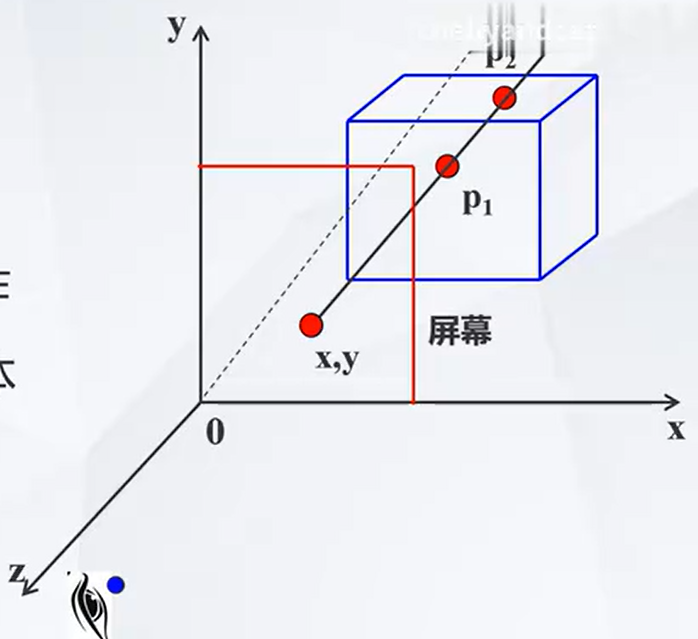
在这张图片中，xoy平面为投影面，射线过(x,y)交立方体于p1和p2，p1和p2的z值就叫做深度值，将较大的深度值存储在Depth数组中，因此屏幕上(x,y)点将显示p1的颜色。
Z-buffer算法伪代码如下：
1 | Z-Buffer 算法() |
优点：简单直观、便于硬件实现
缺点：占用内存大、没有利用图形的相关性和连续性
改进思路：只用一个深度缓存变量zb来存储深度，而不需要数组
改进算法伪代码如下：
1 | 只用一个深度缓存变量改进的 Z-Buffer 算法() |
问题：判断像素点是否在多边形内需要耗费大量时间，节省了空间牺牲了时间
点与多边形的包含性检测：
射线法
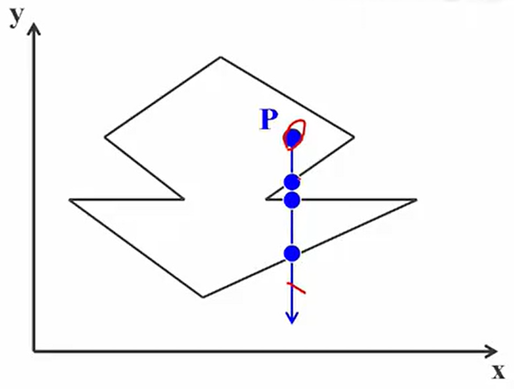
从p点向y=-∞方向作一条射线，交点个数为奇数则在多边形内，交点个数为偶数则在多边形外
当射线经过顶点时，采用左开右闭原则，如果边在射线的左侧就计数，在右侧就不计数
弧长法
以像素点p为圆心画单位圆，并将各边投影到圆上，逆时针为正，顺时针为负，最终计算各段弧长的代数和
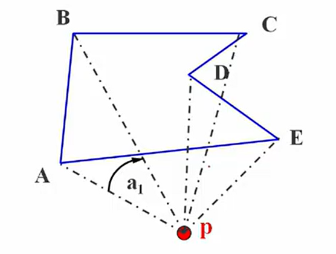
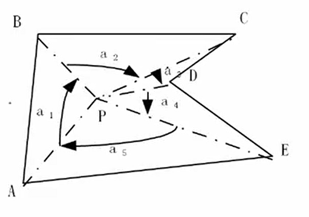
通过上图推导可知，当弧长代数和为0时，点在多边形外；当弧长代数和为2π时，点在多边形内；当弧长代数和为π时，点在多边形边上
以顶点符号为基础的弧长累加法
这一方法以像素点p为原点建立直角坐标系，并判断各顶点的符号
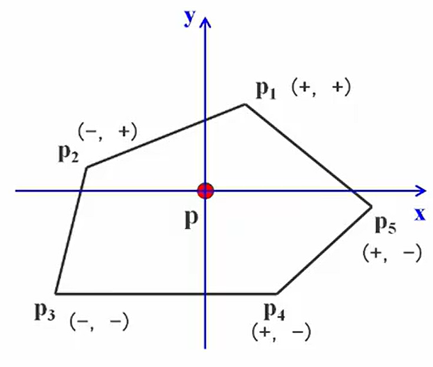
计算规则如下：
- (+,+)→(+,+)，弧长为0
- (+,+)→(-,+)，弧长为π/2
- (+,+)→(-,-)，弧长为±π
- (+,+)→(+,-)，弧长为-π/2
- ……
这样无需进行投影，只根据象限计算角度即可，提升了计算效率
区间扫描算法
对于如下的多边形和扫描线，相邻两个交点构成的区间中像素颜色必然相同，因此只需求出交点、排序后即可填充颜色
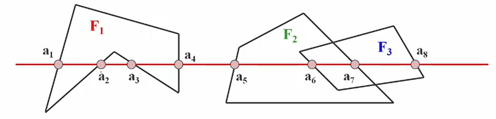
- 不存在多边形时，填充背景色
- 只有一个多边形时，填充该多边形的颜色
- 存在多个多边形时进行深度测试，填充最上面的多边形颜色
该算法可与前面提到的有效边表法相结合，减少求交运算，考虑图形的连贯性，从而提升算法效率
1 | for 每条扫描线 y: |
Warnock算法（区间子分割算法）
采用堆栈结构和“分而治之”的思想，把物体投影到全屏幕窗口上，然后递归分割窗口，直至窗口内目标足够简单可以直接显示即可。
足够简单可以直接显示有以下几种情况：
- 窗口内只有一个多边形
- 窗口仅与一个多边形相交，且无其他多边形
- 窗口被一个多边形包围
- 窗口与多边形分离，无投影
算法步骤：
- 当窗口内没有物体则按照背景色显示
- 若窗口内只有一个面，则直接显示
- 若窗口内含有两个及以上的面，就把窗口等分成四个子窗口，对每个子窗口再重复上面的步骤